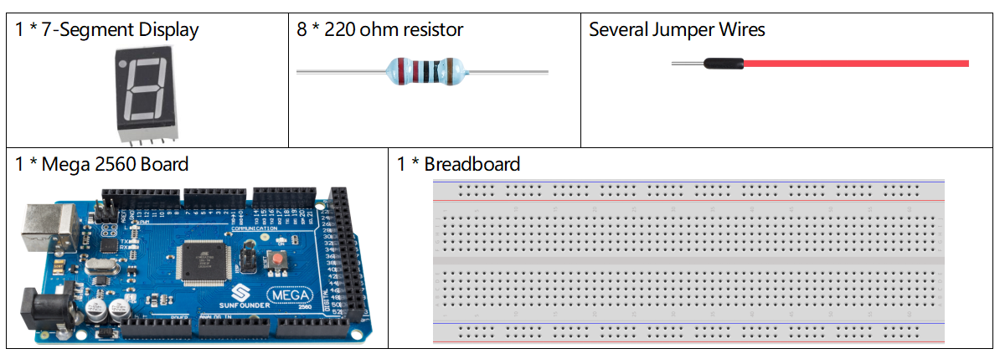
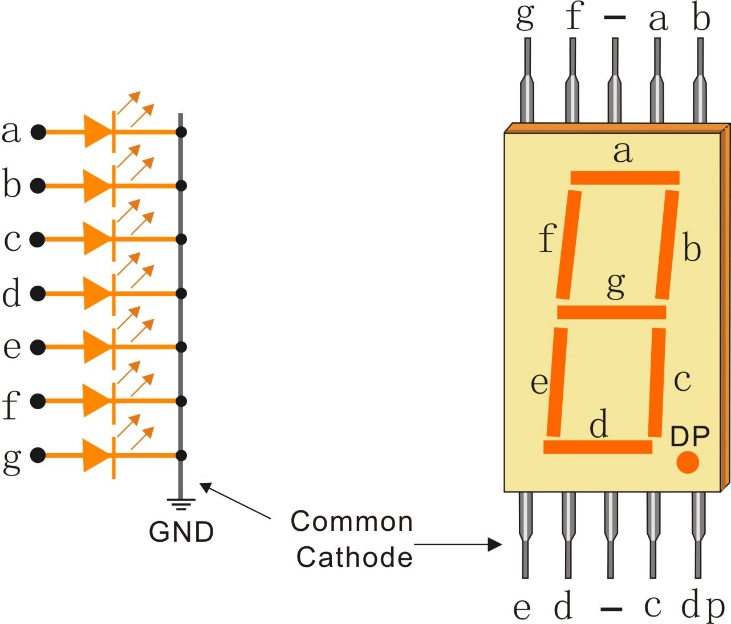
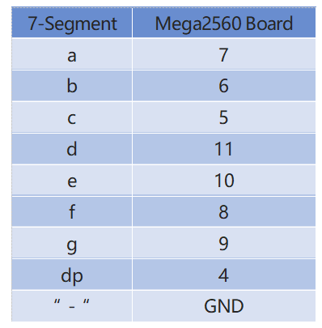

2.5 7-Segment-Anzeige¶
Überblick¶
In diesem Lektion lernen Sie 7-Segment-Displays kennen. Das 7-Segment-Display hat viele Vorteile und wird daher häufig in elektrischen Geräten verwendet, insbesondere in Haushaltsgeräten, die digitale Informationen anzeigen, wie Bildschirme, Klimaanlagen, Warmwasserbereiter, Kühlschränke usw. LEDs auf dem 7-Segment-Display senden Licht durch die Eingabe verschiedener elektrischer Signale an die verschiedenen Pins. Zu den numerischen Informationen, die angezeigt werden können, gehören Uhrzeit, Datum, Temperatur usw.
Erforderliche Komponenten¶
Komponenteneinführung¶
Ein 7-Segment-Display ist eine 8-förmige Komponente, die 7 LEDs enthält. Jede LED wird als Segment bezeichnet. Bei Erregung ist ein Segment Teil einer anzuzeigenden Ziffer.
Es gibt zwei Arten von Pin-Verbindungen: Common Cathode (CC) und Common Anode (CA). Wie der Name schon sagt, verbindet die CC-Anzeige alle Kathoden der 7 LEDs, wenn die CA-Anzeige alle Anoden der 7 Segmente verbindet. In diesem Kit verwenden wir das erstere.
Jede der LEDs im Display erhält ein Positionssegment, wobei einer der Verbindungsstifte aus dem rechteckigen Kunststoffgehäuse herausgeführt wird. Diese LED-Pins sind von „a“ bis „g“ beschriftet und repräsentieren jede einzelne LED. Die anderen LED-Pins sind miteinander verbunden und bilden einen gemeinsamen Pin. Daher werden durch Vorwärtsvorspannung der entsprechenden Stifte der LCD-Segmente in einer bestimmten Reihenfolge einige Segmente heller, während andere Segmente abgeblendet bleiben, wodurch die entsprechenden Zeichen auf dem Display angezeigt werden.
Fritzing Circuit¶

Verbinden Sie jeden Pin ag des 7-Segment-Displays mit einem 220-Ohm-Strombegrenzungswiderstand und dann mit Pin 4–11. GND verbindet sich mit GND.
Die Verkabelung zwischen dem 7-Segment-Display und der Mega2560-Karte wie unten gezeigt:
Schematische Darstellung¶

Code¶
Sobald Sie die Codes hochgeladen haben, sehen Sie in der 7-Segment-Anzeige nacheinander 1, 2, 3, 4, 5, 6, 7, 8, 9, A, b, C, d, E, F nacheinander.
Code-Analyse¶
Nehmen Sie die Pin-Nummern auf dem 7-Segment als Namen und deklarieren Sie die Pins auf der Mega2560-Platine.
const int a=7; //a of 7-segment attach to digital pin 7
const int b=6; //b of 7-segment attach to digital pin 6
const int c=5; //c of 7-segment attach to digital pin 5
const int d=11;//d of 7-segment attach to digital pin 11
const int e=10;//e of 7-segment attach to digital pin 10
const int f=8;//f of 7-segment attach to digital pin 8
const int g=9;//g of 7-segment attach to digital pin 9
const int dp=4;//dp of 7-segment attach to digital pin 4
Installieren Sie eine Reihe von Unterfunktionen, um den Pegelstatus an jedem Block während der Nummernanzeige des 7-Segments zu verpacken. Wenn beispielsweise das Zeichen 「2 displayed angezeigt wird, werden der Block F und der Block c ausgeschaltet. Die anderen Blöcke leuchten.

Zuerst müssen wir wissen, wie es aussieht, wenn die Ziffer 2 auf der 7-Segment-Anzeige angezeigt wird. Es sind tatsächlich die Segmente a, b, d, e und g, die eingeschaltet sind, was die Anzeige von 2 erzeugt. Bei der Programmierung werden die mit diesen Segmenten verbundenen Pins auf High Level gesetzt, wenn c und f Low Level sind. Hier verwenden wir eine for() - Anweisung, um diese Pins jeweils als High Level festzulegen (die geschweiften Klammern nach for() werden gelöscht, da nur eine Zeile vorhanden ist). Verbinden Sie Pin dp mit Pin 4; Es ist bereits in setup() als LOW definiert.
Nach dem Ausführen dieses Teils zeigt das 7-Segment 2 an. Ebenso ist die Anzeige anderer Zeichen gleich. Da die Großbuchstaben b und d, dh B und D, auf dem Display wie 8 und 0 aussehen, werden sie in Kleinbuchstaben angezeigt.
...
void digital_2(void) //diaplay 2 to the 7-segment
{
digitalWrite(b,HIGH);
digitalWrite(a,HIGH);
for(int j = 9;j <= 11;j++)
digitalWrite(j,LOW);
digitalWrite(c,LOW);
digitalWrite(f,LOW);
}
...
Rufen Sie in loop () die Funktion auf, die die Nummer anzeigt.
void loop()
{
digital_1();//diaplay 1 to the 7-segment
delay(1000);//wait for a second
digital_2();//diaplay 2 to the 7-segment
delay(1000); //wait for a second
digital_3();//diaplay 3 to the 7-segment
//...
}